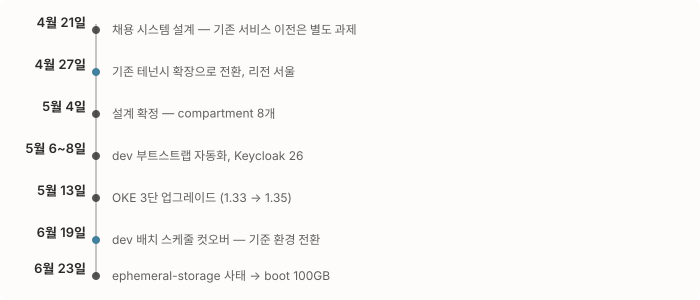
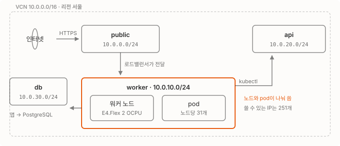
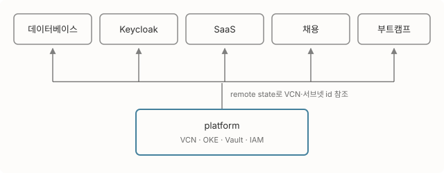
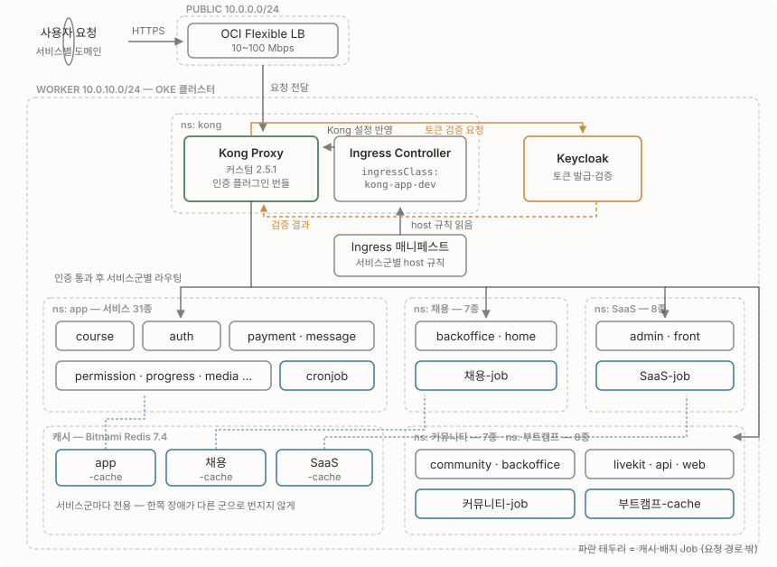
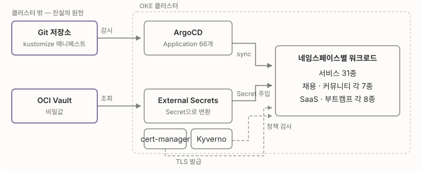

올해 회사에 Oracle Cloud 크레딧이 생겼어요. 그리고 이관이 결정됐어요. AWS의 관리형 쿠버네티스인 EKS에서 OCI의 관리형 쿠버네티스인 OKE로, 서비스 전부 다요.
거창한 기술적 서사로 시작하고 싶지만, 많은 회사의 클라우드 이관이 그렇듯 시작은 계약이었어요. 엔지니어링은 그다음이었고요. 1편인 이 글에서는 설계가 뒤집힌 과정과 dev 클러스터에서 밟은 함정들을 다루고, prod 이관과 컷오버는 2편에서 이어가요.

코드가 없는 EKS에서 출발했다
기존 EKS는 오래전에 구축만 된 상태였어요. 누가 왜 이렇게 만들었는지 히스토리가 없고, 인프라 코드도 없었어요. 콘솔에 떠 있는 클러스터가 유일한 문서였죠. 그래서 이 이관은 “옮기기”이기 전에 “알아내기”였어요. 돌아가는 클러스터를 실측해 사양을 역산하는 일이 이관 내내 따라다녀요. OKE를 처음부터 끝까지 Terraform으로 구축한 것도 같은 이유고요. 이번에는 코드가 곧 문서가 되도록요.
첫 타자는 신규 서비스인 채용 시스템(ATS)이었어요. 4월에 ATS용 OCI 인프라를 설계하면서 새 플랫폼을 검증하고, 기존 서비스는 그다음에 옮기는 순서였죠. 이 글의 dev 구축은 그 첫 타자용 플랫폼이 전사 이관의 기반으로 자라는 과정이에요.
어디에 지을지부터 정했다
OCI에는 테넌시라는 최상위 계정 단위가 있어요. AWS 계정 하나에 해당해요. 처음에는 테넌시를 새로 만드는 안으로 잡았다가, 6일 만에 기존 테넌시를 확장하는 쪽으로 방향을 바꿨어요. 리전도 춘천(ap-chuncheon-1)에서 서울(ap-seoul-1)로 함께 옮겼고요. 이때 작성해뒀던 dev용 oke.tf와 vcn.tf를 걷어내고, 당분간은 기존에 돌아가던 클러스터를 참조하는 구조로 갔어요. 이 선택이 뒤에 state를 다시 채워야 하는 일로 이어져요.
컨테이너 레지스트리나 메일 발송처럼 환경과 무관한 자원은 _common compartment로 분리했어요. compartment는 테넌시 안에서 리소스를 묶어 격리하는 논리 단위예요. 폴더에 가까워요.
최종 설계는 테넌시 하나에 리전은 서울, compartment 8개(환경별 셋 + 서비스별 분리), 예산은 월 $1,000에 70/90/100% 알림으로 정리됐어요.
dev 클러스터는 이렇게 구성했어요
네트워크는 VCN 하나(10.0.0.0/16)에 용도별 서브넷 넷을 뒀어요.

worker 서브넷에서 노드와 pod가 IP를 함께 쓴다는 게 나중에 발목을 잡아요. OKE의 VCN-native 네트워킹에서는 pod가 노드와 같은 서브넷에서 IP를 하나씩 받아가거든요. /24는 실제로 쓸 수 있는 IP가 251개고, 이 숫자가 노드당 pod 상한을 결정해버려요. 2편의 슬롯 만석 이야기가 여기서 시작돼요.
클러스터는 이렇게 잡았어요.
- 쿠버네티스 v1.35.2, 워커는 VM.Standard.E4.Flex 2 OCPU / 16GB 3대(지금은 6대)
- 노드당 pod 상한은 31이에요. OCPU 수가 정하는 VNIC 개수에서 나온 값이거든요
- boot volume은 100GB예요. 처음엔 50GB로 잡았다가 뒤에 나올 이유로 늘렸어요
Terraform 스택은 용도별로 여섯 개로 나눴어요. 하나의 거대한 state를 만들지 않으려는 의도였는데, 결과적으로 prod에서 스택 하나의 변수 파일이 어긋났을 때 피해 범위가 그 스택에 갇히는 효과도 있었어요.

클러스터 안은 이렇게 채웠어요. 하나의 클러스터에 서비스군 다섯 개가 네임스페이스로 갈려 들어가요. 가장 큰 곳이 31종이고 나머지는 7~8종씩이에요.

Kong은 기본 이미지가 아니라 oauth2-token-introspection-request, keycloak-auth-request 플러그인을 번들한 커스텀 빌드를 써요. 인증을 각 서비스가 따로 하지 않고 게이트웨이에서 한 번에 처리하려는 구성이라, Ingress에 KongPlugin을 붙이면 그 경로로 들어온 요청은 Keycloak 검증을 거쳐야 서비스에 닿아요.
캐시는 서비스군마다 전용 Redis를 뒀어요(Bitnami 차트, Redis 7.4). 하나를 공유하면 관리는 편하지만 한 서비스군의 캐시 폭주가 전체로 번지니까, 처음부터 서비스군별 캐시로 갈랐어요. 성격이 다른 한 곳은 자체 Redis와 PgBouncer를 따로 두고요.
배치 작업도 요청 경로와 분리했어요. 서비스군마다 배치 잡이 하나씩 각자 스케줄로 도는데, 이게 나중에 dev 컷오버에서 중요해져요. 같은 배치가 EKS와 OKE 양쪽에서 동시에 돌면 쿠폰이 두 번 발급되거든요.
여기서 함정을 하나 밟았어요. 기존 Kong이 이미 ingressClass: kong을 쓰고 있어서, dev Kong을 같은 이름으로 띄우면 두 Kong이 같은 Ingress를 서로 가져가려고 해요. dev는 kong-likelion-dev로 분리하고 CRD 설치도 껐어요(기존 Kong이 설치해둔 것을 공유). 클러스터가 갈려도 Ingress 클래스는 이름 하나로 충돌할 수 있다는 걸 여기서 배웠어요.
배포와 비밀값 쪽은 이렇게 돌아가요.

비밀값은 클러스터에 직접 넣지 않고 OCI Vault에 두고 External Secrets가 가져와 Secret으로 만들어요. 매니페스트는 Git에만 있고 ArgoCD가 반영하고요. 클러스터 상태를 알고 싶으면 클러스터가 아니라 Git과 Vault를 보면 된다는 게 이 구성의 목적이에요.
ArgoCD Application도 코드로
서비스가 60개를 넘어가면 ArgoCD Application 자체를 사람이 관리할 수 없어요. 그래서 Application 정의를 Helm chart로 만들고, 환경 차이는 values 파일로만 두는 구조로 갔어요.
argocd/
├── templates/app/ # Application 정의 66개 (auth.app.yaml, course.app.yaml, …)
├── values-likelion-dev.yaml # develop 브랜치 추적, ingressClass: kong-likelion-dev
└── values-likelion-prod.yaml # main 브랜치 추적
Application 하나는 이렇게 생겼어요. 서비스마다 다른 건 이름과 kustomize 경로뿐이고, 브랜치·네임스페이스·sync 정책은 전부 values에서 와요.
metadata:
name: likelion-auth-{{ .Values.envShort }}
spec:
source:
targetRevision: {{ .Values.source.targetRevision }} # dev=develop, prod=main
path: oci/ops/likelion/auth/kustomize/overlay/{{ .Values.overlayName }}
destination:
namespace: {{ .Values.namespace }}환경을 하나 더 만들 때 values 파일 하나만 쓰면 서비스 66개가 통째로 따라오게 했어요. dev와 prod의 차이도 파일 두 개를 diff하면 바로 보이고요.
sync는 dev·prod 모두 수동으로 뒀어요. 자동 sync가 편하긴 한데, Git에 push하는 순간 운영이 바뀌는 게 이 시점에는 부담이었어요. ArgoCD UI에서 diff를 확인하고 누르는 절차를 남겨둔 거예요. 이 판단이 2편에서 사고 하나를 막아줘요.
레지스트리 토큰은 스스로 갱신하게
컨테이너 이미지를 ECR과 OCIR 두 곳에서 받아오는데, 둘 다 인증 토큰이 만료돼요. 만료될 때마다 사람이 갱신하면 잊어버리는 날 배포가 멈추니까 양쪽 다 자동화했어요. 다만 만료 주기가 달라서 방식도 다르게 갔어요.
| ECR (AWS) | OCIR (OCI) | |
|---|---|---|
| 토큰 만료 | 짧음 (하루 안쪽) | 90일 |
| 갱신 주체 | 클러스터 안 CronJob, 6시간마다 | Terraform, 80일마다 재발급 |
| 반영 경로 | 네임스페이스 5곳의 Secret을 직접 patch | Vault에 저장 → External Secrets가 배포 |
ECR 쪽은 CronJob이 aws ecr get-login-password로 받은 값을 쿠버네티스 API로 네임스페이스 다섯 곳의 Secret에 넣어줘요. 처음 도는 경우엔 생성하고, 있으면 patch하고, 예상 못 한 HTTP 응답이면 중단하게 했어요. OCIR 쪽은 90일 만료라 CronJob이 어울리지 않아서, Terraform의 time_rotating으로 80일마다 재발급하고 Vault에 넣어요. 만료 열흘 전에 갱신되니 사이클이 겹칠 일이 없어요.
이런 것들이 이관에서 눈에 안 띄는 부분이에요. 잘 돌아가면 아무도 모르고, 안 되면 그날 배포가 전부 멈춰요.
다만 이 구조에도 빈틈이 있어요. Git에 없는 필드는 ArgoCD가 관리하지 않아서 수동 변경이 살아남는데, 그건 아래에서 실제로 겪어요.
Terraform state는 OCI에 뒀어요
Terraform은 자기가 만든 리소스 목록을 state 파일에 기록해요. 팀이 같이 쓰려면 이 파일을 원격 저장소에 둬야 하고요. OCI Object Storage에는 S3 호환 API가 있어서 Terraform의 S3 backend를 그대로 쓸 수 있는데, 대신 함정 3개를 실측으로 배웠어요.
- chunked encoding 미지원. Terraform이 쓰는 AWS SDK는 업로드에 체크섬을 chunked 방식으로 실어 보내는데 OCI가 받지 못해요.
skip_s3_checksum옵션으로 꺼야 업로드가 성공해요. - lockfile 미지원. 두 명이 동시에 apply하는 것을 막을 수 없어 운영자 한 명 가정으로 갔어요.
- VCN의 dns_label이 코드와 불일치하면 강제 replace가 떠요. 모르고 apply하면 네트워크를 통째로 다시 만들게 되고요.
그리고 앞서 구조를 바꾼 대가를 여기서 치렀어요. 스택을 합치면 새 스택의 state는 백지에서 시작해요. 클라우드에는 자원이 멀쩡히 돌아가고 있는데도, 새 스택 입장에서는 자기가 만든 게 하나도 없거든요. 그대로 apply하면 이미 있는 걸 또 만들려다 실패해요. 그래서 등록 스크립트(import.sh)를 만들어 실제 자원의 ID를 조회한 뒤 terraform import로 하나씩 state에 집어넣었어요.
Keycloak 26 헬스체크가 세 번 발목을 잡았다
인증 서버는 Keycloak 26을 새로 구축했는데, 헬스체크 설정에 함정이 세 겹으로 있었어요. 첫째, Keycloak 26에는 구버전의 /auth 경로 프리픽스가 없어요(17부터 기본 제거). 컨테이너 상태를 주기적으로 확인하는 probe의 경로부터 어긋나죠. 둘째, 경로를 고치면 또 깨져요. 직접 넣은 httpGet 설정이 Helm chart(쿠버네티스 배포 템플릿) 기본값의 tcpSocket probe를 대체하지 않고 merge되면서, 한 probe에 두 방식이 섞이거든요. 셋째, 그래서 custom probe 설정을 통째로 override해야 풀려요. 이 순서를 문서로 남겨뒀고, 나중에 prod를 구축할 때 그대로 재사용됐어요.
dev를 굴리며 세 가지를 배웠어요
쿠버네티스 업그레이드는 계단으로. CVE 하나가 공개됐는데 쓰던 1.33.1 라인에는 대응 빌드가 없었고, 1.33.10 라인부터 있었어요. 1.33.10으로 넘어가는 김에 최신인 1.35.2까지 가기로 했는데, 쿠버네티스는 마이너 버전을 건너뛰는 업그레이드를 지원하지 않아요. 그래서 1.33.10 → 1.34.2 → 1.35.2, terraform apply 세 번의 계단을 밟았어요. 노드는 한 대씩(surge 1) 교체했고요. 정식 커널 패치가 나오기 전까지는 OCI가 전 노드에 자동 배포하는 완화(mitigation) DaemonSet이 방어하고 있었어요.
업그레이드 전에 정책 엔진 Kyverno도 손봤어요. Kyverno는 클러스터로 들어오는 요청을 webhook으로 가로채 검사하는데, 업그레이드 중에는 이 webhook 호환이 깨질 수 있거든요. 그래서 failurePolicy를 Ignore로 미리 낮췄다가 업그레이드가 끝난 뒤 복원했어요. Ignore는 webhook이 응답하지 못해도 요청을 통과시키는 설정이에요.
boot volume은 처음부터 크게. 6월 23일, dev 노드들이 ephemeral-storage 부족으로 파드를 퇴거(evict)시키기 시작했어요. 원인은 컨테이너 이미지 누적이 boot volume을 채운 거였어요. boot volume이 50GB인데 실사용 가능한 용량은 35.5Gi뿐이었거든요. 100GB로 늘리면서 하나 더 배웠어요. OKE는 boot volume을 늘려도 root 파일시스템을 자동으로 확장하지 않아요. 노드 부팅 시 실행되는 초기화 스크립트(cloud-init)에 oci-growfs를 넣되, oke-init보다 먼저 실행해야 kubelet이 늘어난 용량을 인식해요. 노드들을 롤링 교체한 뒤 35.5Gi는 88.9Gi가 됐고, 퇴거되는 파드는 0이 됐어요.
ArgoCD가 소유하지 않은 필드는 수동 값이 살아남는다. 배포는 ArgoCD로 해요. Git에 둔 매니페스트를 클러스터에 반영해주는 GitOps 도구예요. 그런데 Git 쪽 CronJob 매니페스트에 suspend 필드가 아예 없으면, ArgoCD는 그 필드를 관리 대상으로 삼지 않아요. 그래서 누군가 대시보드에서 수동으로 적용한 suspend: true가 상태는 Synced인데도 계속 살아 있죠. 실제로 겪은 뒤에는 환경별 설정을 겹쳐 얹는 overlay 파일에 suspend patch를 명시해 소유권부터 확보하는 것으로 정리됐어요.
dev를 마무리하고 prod로 넘어갔어요
6월 19일, dev의 cron이 EKS에서 OKE로 넘어갔어요. 같은 스케줄이 양쪽에서 돌면 쿠폰이 중복 발급되는 사고가 나기 때문에, OKE 쪽 가동을 확인한 뒤 EKS 쪽을 정지하는 순서였어요. 이것으로 dev는 사실상 OKE가 기준 환경이 됐고요.
원래는 여기서 이어서 prod까지 제가 할 계획이었어요. 그런데 ATS 구축 같은 급한 일이 겹치면서 손을 뗐고, prod는 다른 분이 맡게 됐죠. 그러다 6월 말에 그 일이 저한테 다시 왔어요. 돌아가는 인프라를 파악하는 것부터, 그대로 apply했으면 클러스터가 통째로 교체될 뻔했던 설정 드리프트를 잡아낸 일, 그리고 컷오버 주간에 몰린 문제들까지 2편에서 이어서 써요.